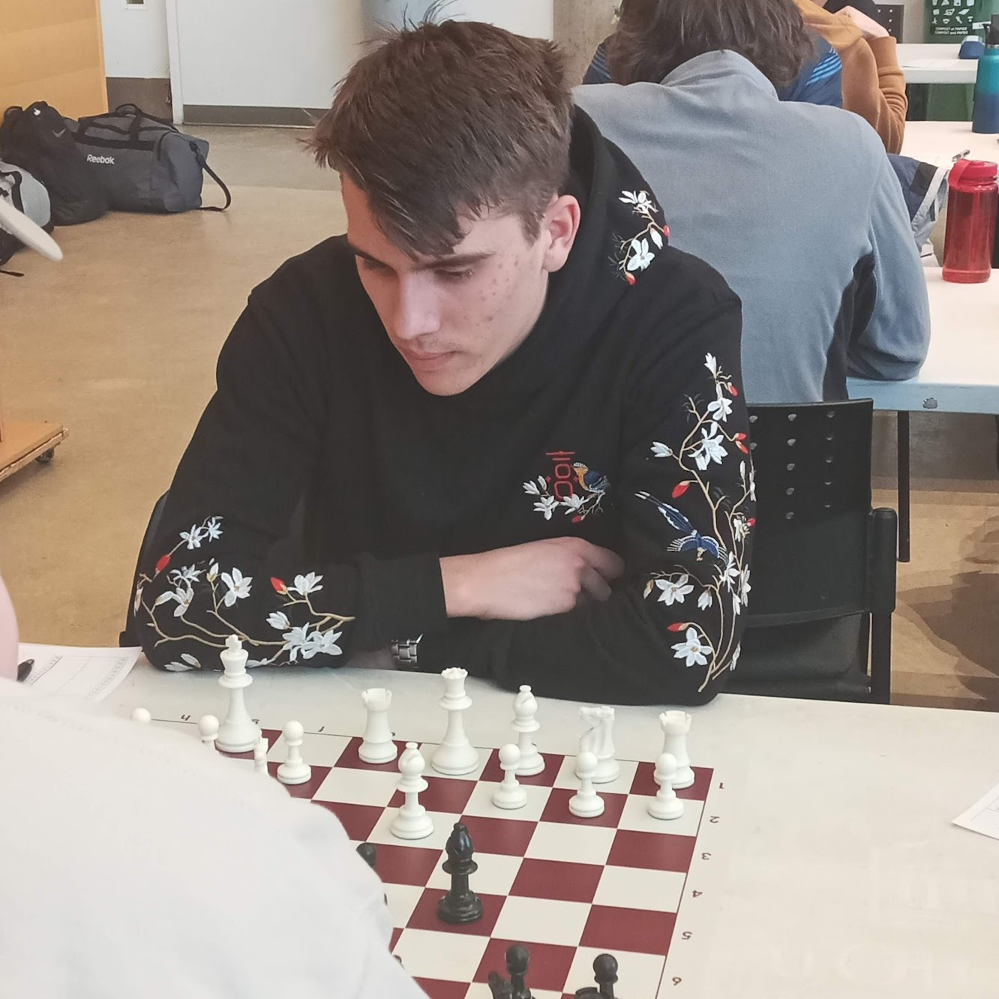

<div class="container" style="background-color: #023e8a;">
    <div class="row">
        <!-- About Me -->
        <div class="col-lg m-1">
            <div class="border-white p-3">
                <div class="text-center">
                    <h2 style="color: aliceblue;"> About Me </h2>
                    
                    <p style="color: aliceblue; margin-top: 10px;">Hi, my name is Nick and I am a 3rd year computer science student at the University of Toronto. I'm pursuing a specialist degree in CS with a focus in AI, and minor degrees in statistics and the history of science and technology. I like working with anything tech-related like game-design and building projects. <br> <br> Outside of school, I enjoy playing chess competitively (sometimes I compete for the UofT team), and doing sports like soccer. I'm a brown belt in judo and am working towards a black belt, I used to compete provincially in running and swimming competitions, but I enjoy learning new things the most! </p>
                </div>
            </div>
        </div>
        <!-- Featured Project -->
        <div class="col-lg m-1">
            <div class="border-white p-3">
                <div class="text-center">
                    <h2 style="color: aliceblue;">Featured Project</h2>
                    <h4 style="color: aliceblue;">{{featuredProject.name}}</h4>
                </div>
                
                <p style="color: aliceblue;" class="mt-2">{{featuredProject.summary}}</p>
                <p style="color: aliceblue;">Visit the portfolio section to learn more.</p>
            </div>
        </div>
    </div>
</div>
